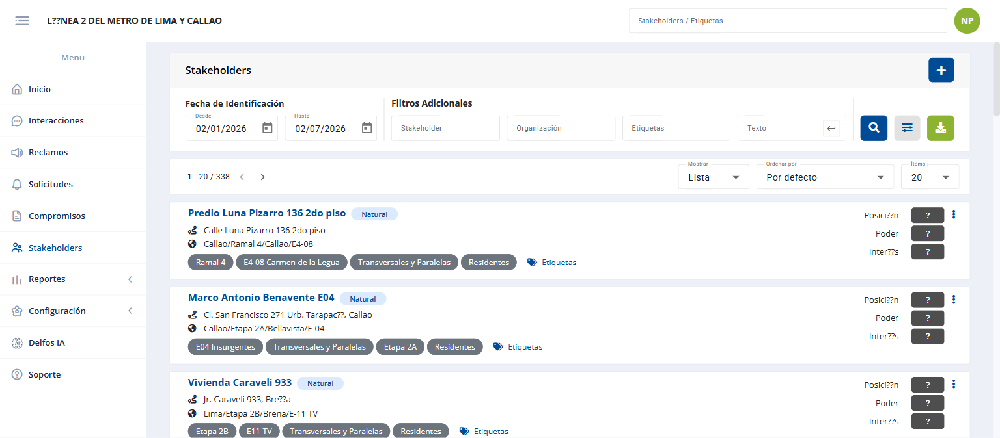
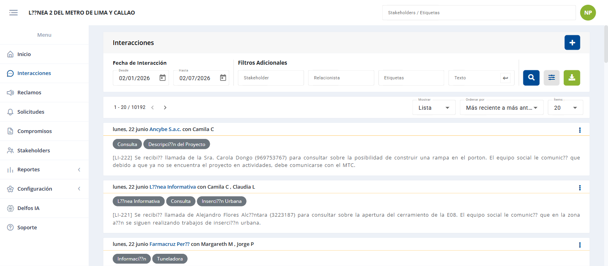
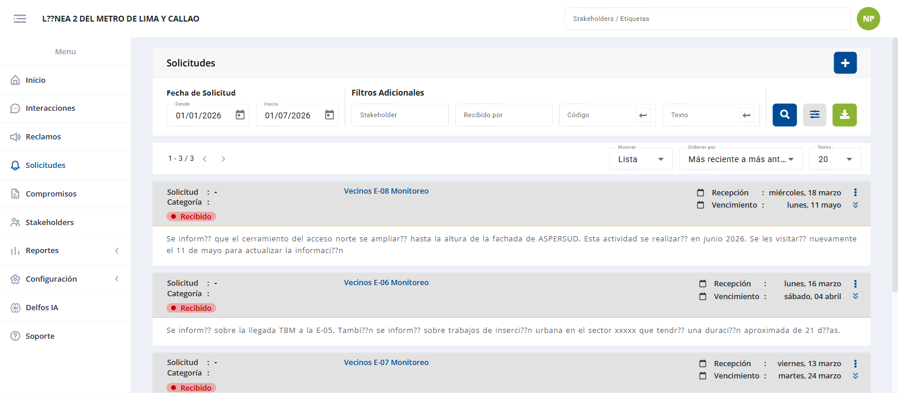
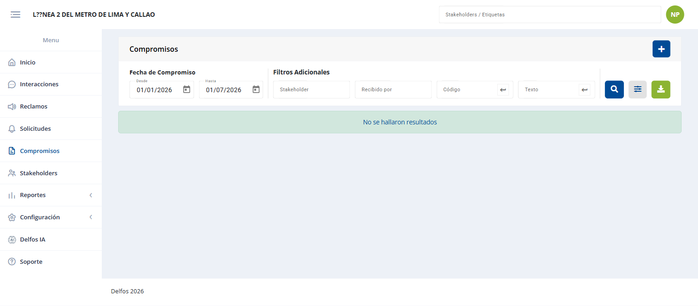
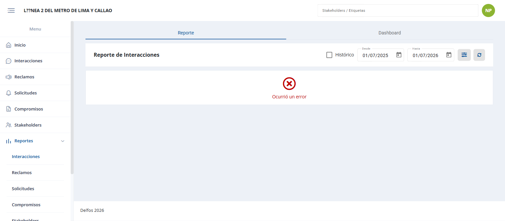
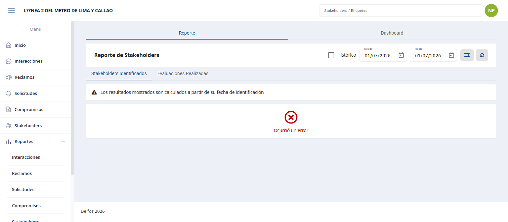
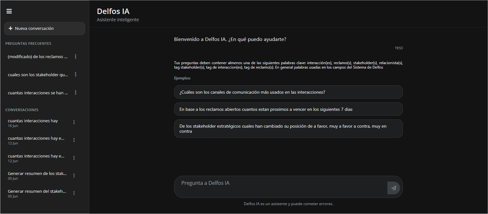
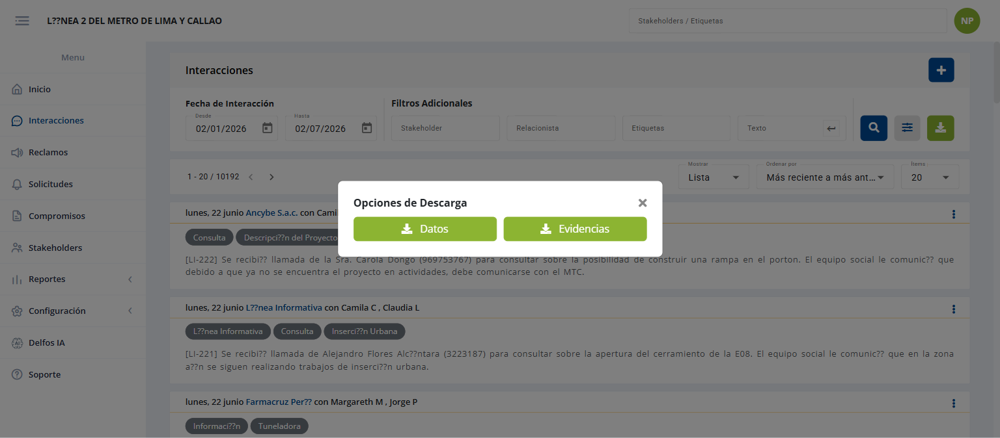
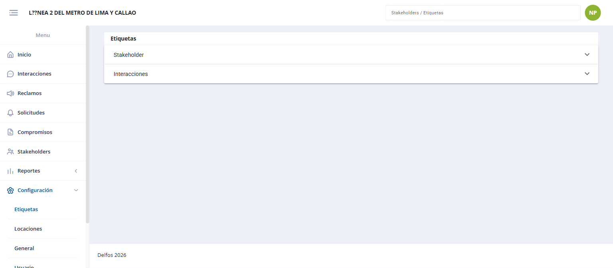

Bienvenido a DelfosWelcome to Delfos
Esta guía te acompaña de principio a fin en el uso de Delfos, el sistema para gestionar la relación de tu proyecto con la comunidad y sus grupos de interés. No necesitas conocimientos técnicos: aprenderás qué hace cada parte del sistema y cómo realizar cada tarea, paso a paso.
This guide walks you through Delfos from start to finish — the platform for managing your project's relationship with the community and its stakeholders. No technical knowledge needed: you'll learn what each part does and how to perform every task, step by step.
¿Qué es Delfos y para qué lo usarás?What is Delfos and what will you use it for?
Empieza aquí si es tu primera vezStart here if it's your first time
Delfos es una plataforma web donde tu equipo registra y da seguimiento a todo lo que ocurre con los stakeholders del proyecto: personas, familias, negocios e instituciones del entorno. Cada conversación, queja, pedido y acuerdo queda guardado en un solo lugar, ordenado y disponible para todo el equipo.
Delfos is a web platform where your team records and tracks everything that happens with the project's stakeholders: people, families, businesses and institutions around it. Every conversation, complaint, request and agreement is stored in one place — organized and available to the whole team.
Con Delfos podrás, principalmente:
With Delfos you can, mainly:
- Mantener un directorio de stakeholders con toda su información e historia.Keep a stakeholder directory with all their information and history.
- Registrar las interacciones (visitas, llamadas, correos) que tienes con ellos.Record the interactions (visits, calls, emails) you have with them.
- Atender reclamos y solicitudes con un flujo claro de principio a fin.Handle claims and requests with a clear end-to-end workflow.
- Llevar el control de los compromisos acordados con la comunidad.Track the commitments agreed with the community.
- Ubicar todo en el mapa y trabajar con predios georreferenciados.Locate everything on the map and work with georeferenced land parcels.
- Ver reportes y hacer consultas con IA para tomar mejores decisiones.View reports and ask the AI assistant to make better decisions.
Recorrido rápido de esta guíaQuick tour of this guide
Ingresar al sistemaSigning in
Tu primer paso cada díaYour first step every day
Es la puerta de entrada a Delfos. Aquí confirmas tu identidad para acceder a la información de tu proyecto de forma segura.It's the entry point to Delfos. Here you confirm your identity to securely access your project's information.
 1
2
3
4
1
2
3
4
Paso a pasoStep by step Iniciar sesiónSign in
- 1Abre en tu navegador el enlace que te entregó el administrador de tu proyecto.Open the link your project administrator gave you in your browser.
- 2Escribe tu usuario y tu contraseña.Type your username and password.
- 3Haz clic en Iniciar Sesión. Entrarás a la pantalla de Inicio.Click Sign In. You'll land on the Home screen.
Conocer la pantallaGetting to know the screen
Aprende a moverte por DelfosLearn to move around Delfos
Toda pantalla de Delfos tiene la misma estructura. Una vez que la reconoces, sabrás moverte por cualquier módulo.
Every Delfos screen shares the same structure. Once you recognize it, you'll know your way around any module.
 1
2
3
4
5
1
2
3
4
5
Cómo funciona cualquier listadoHow any list works
Casi todos los módulos muestran una lista con la misma lógica. Aprender uno es aprenderlos todos:
Almost every module shows a list with the same logic. Learn one and you've learned them all:
| ElementoElement | Para qué sirveWhat it's for |
|---|---|
| Filtros (arriba)Filters (top) | Acotar por fecha, tipo, estado, responsable, etc.Narrow by date, type, status, owner, etc. |
| BuscadorSearch box | Encontrar por texto (nombre, código…).Find by text (name, code…). |
| ResultadosResults | La tabla con los registros; clic en una fila abre el detalle.The table of records; click a row to open the detail. |
| PaginaciónPagination | Avanzar entre páginas (p. ej. “1 - 20 / 338”).Move between pages (e.g. “1 - 20 / 338”). |
| Botón “+ Nuevo”“+ New” button | Crear un registro nuevo.Create a new record. |
| Exportar / MapaExport / Map | Descargar la lista a Excel o verla en el mapa.Download the list to Excel or view it on the map. |
Conceptos claveKey concepts
El vocabulario que se repite en todo DelfosThe vocabulary you'll see everywhere in Delfos
Todo en Delfos gira en torno al stakeholder. A partir de él se registran las gestiones. Entender estos conceptos es entender el sistema completo.
Everything in Delfos revolves around the stakeholder. Every activity is recorded against one. Understanding these concepts means understanding the whole system.
Cómo fluye el trabajoHow work flows
De un stakeholder a un compromiso cumplidoFrom a stakeholder to a fulfilled commitment
Los módulos no son islas: se encadenan. Un mismo caso puede recorrer varias etapas, y todo queda ligado al stakeholder.
Modules aren't islands — they chain together. A single case can move through several stages, all tied back to the stakeholder.
Además, cada reclamo, solicitud o compromiso tiene su propio ciclo interno de etapas (por ejemplo: propuesta → respuesta → cierre → evaluación). El módulo Proceso de cada registro muestra esa línea de tiempo.
In addition, each claim, request or commitment has its own internal lifecycle of stages (for example: proposal → response → closure → evaluation). Each record's Process view shows that timeline.
InicioHome
Tu panel de resumenYour summary dashboard
Es la primera pantalla al entrar. Resume el estado del proyecto y lo que requiere tu atención.It's the first screen you see. It summarizes the project status and what needs your attention.
- Ver indicadores generales del proyecto de un vistazo.See the project's key indicators at a glance.
- Revisar tus pendientes y avisos (boletín) del proyecto.Review your pending items and project notices (bulletin).
- Saltar directamente a los módulos con mayor actividad.Jump straight to the busiest modules.
Stakeholders
El directorio central de personas y organizacionesThe central directory of people and organizations
Es el corazón de Delfos: el registro de cada persona natural u organización con la que el proyecto se relaciona, con toda su información e historia.It's the heart of Delfos: the record of every individual or organization the project engages with, with all their information and history.

Qué puedes hacer aquí:
What you can do here:
- Crear un stakeholder (persona natural u organización) y editarlo.Create a stakeholder (individual or organization) and edit it.
- Abrir su Ficha 360°: datos, historial, interacciones, reclamos, compromisos y evaluaciones.Open its 360° Profile: data, history, interactions, claims, commitments and evaluations.
- Asignar etiquetas para clasificarlo.Assign tags to classify it.
- Evaluar su posición frente al proyecto (poder, interés, categoría).Evaluate its position toward the project (power, interest, category).
- Fusionar duplicados y vincularlo a predios.Merge duplicates and link it to land parcels.
- Importar muchos stakeholders desde Excel y exportar el listado.Import many stakeholders from Excel and export the list.

Paso a pasoStep by step Crear un stakeholderCreate a stakeholder
- 1Entra a y haz clic en + Nuevo.Go to and click + New.
- 2Elige el tipo: persona natural u organización.Choose the type: individual or organization.
- 3Completa nombre/razón social, documento, ubigeo y demás datos.Fill in name, ID document, location and the rest of the details.
- 4Si el sistema detecta posibles duplicados, revísalos antes de guardar.If the system detects possible duplicates, review them before saving.
- 5Guarda. El stakeholder queda disponible para todo el equipo del proyecto.Save. The stakeholder is now available to the whole project team.
PrediosLand parcels
Terrenos del proyecto y sus vínculosProject land and its links
Registra los terrenos del área de influencia, sus códigos, y qué stakeholders se relacionan con cada uno.Records the land parcels in the area of influence, their codes, and which stakeholders relate to each one.
- Crear, editar y eliminar predios; ver su ficha.Create, edit and delete parcels; view their profile.
- Asignar y gestionar códigos de predio.Assign and manage parcel codes.
- Vincular stakeholders a un predio (con parentesco / condición de propiedad).Link stakeholders to a parcel (with kinship / ownership condition).
- Verlos en el mapa y exportar el listado.See them on the map and export the list.
InteraccionesInteractions
El registro de cada contactoThe record of every contact
Guarda cada contacto con un stakeholder (visita, llamada, reunión, correo). Es la memoria viva de la relación.Stores every contact with a stakeholder (visit, call, meeting, email). It's the living memory of the relationship.

- Registrar una interacción con tipo, canal, prioridad, fecha y participantes.Log an interaction with type, channel, priority, date and participants.
- Adjuntar archivos (fotos, actas, documentos).Attach files (photos, minutes, documents).
- Agregar comentarios de seguimiento.Add follow-up comments.
- Generar una interacción asistida por IA a partir de un texto.Generate an AI-assisted interaction from a piece of text.
- Verlas en el mapa y exportarlas (incluidos sus adjuntos).See them on the map and export them (including attachments).
Paso a pasoStep by step Registrar una interacciónLog an interaction
- 1Entra a y haz clic en + Nuevo.Go to and click + New.
- 2Selecciona el o los stakeholders involucrados.Select the stakeholder(s) involved.
- 3Indica tipo, canal, fecha y describe lo ocurrido.Set the type, channel, date and describe what happened.
- 4Adjunta archivos si corresponde y guarda.Attach files if needed and save.
ReclamosClaims
Atención de quejas de principio a finHandling complaints end to end
Gestiona las quejas formales de la comunidad con un flujo controlado, desde que se registran hasta que se cierran y evalúan.Manages the community's formal complaints with a controlled workflow, from logging to closure and evaluation.

El ciclo del reclamoThe claim lifecycle
* La apelación solo ocurre si el reclamante no acepta la respuesta.* The appeal only happens if the claimant rejects the response.
| EtapaStage | Qué hacesWhat you do |
|---|---|
| RegistroRegister | Creas el reclamo con su tipo, canal, stakeholder y descripción. Recibe un código.Create the claim with its type, channel, stakeholder and description. It gets a code. |
| PropuestaProposal | Registras la propuesta de solución.Record the proposed solution. |
| RespuestaResponse | Documentas la respuesta formal al reclamante.Document the formal response to the claimant. |
| CierreClosure | Cierras el reclamo cuando queda resuelto.Close the claim once it's resolved. |
| EvaluaciónEvaluation | Evalúas cómo se resolvió.Evaluate how it was resolved. |
| ApelaciónAppeal | Gestionas la apelación si el reclamante no está conforme.Handle the appeal if the claimant is not satisfied. |
SolicitudesRequests
Pedidos y requerimientos con seguimientoRequests and requirements with tracking
Gestiona los pedidos que no son quejas (información, permisos, apoyos) con su propio ciclo de aprobación y cierre.Manages requests that aren't complaints (information, permits, support) with their own approval and closure cycle.

El ciclo de la solicitudThe request lifecycle
Cada etapa tiene su formulario para registrar, editar y consultar. El botón Proceso muestra el avance completo.
Each stage has its own form to record, edit and review. The Process button shows the full progress.
CompromisosCommitments
Acuerdos con la comunidad y sus entregablesAgreements with the community and their deliverables
Lleva el control de los acuerdos formales del proyecto con la comunidad, y de las acciones (entregables) necesarias para cumplirlos.Tracks the project's formal agreements with the community and the actions (deliverables) needed to fulfill them.

- Crear un compromiso con su fuente, categoría, responsable y fechas.Create a commitment with its source, category, owner and dates.
- Agregar entregables (las acciones concretas).Add deliverables (the concrete actions).
- Registrar el cumplimiento, ajustes, implementación o cancelación de cada entregable.Record each deliverable's fulfillment, adjustments, implementation or cancellation.
- Seguir el avance en el dashboard de compromisos.Track progress in the commitments dashboard.
Compromisos externosExternal commitments
Compromisos de otra naturaleza (Compromisox)Commitments of a different nature (Compromisox)
Es una variante de compromisos con su propio ciclo. Se usa cuando el proyecto lo tiene habilitado.A variant of commitments with its own lifecycle. Used when the project has it enabled.
Su cicloIts lifecycle
Incluye informe propio y dashboard de seguimiento (nuevos, abiertos, cerrados y performance).
Includes its own report and a tracking dashboard (new, open, closed and performance).
MapaMap
Todo tu proyecto, georreferenciadoYour whole project, georeferenced
Visualiza stakeholders, predios, interacciones, reclamos, solicitudes y compromisos sobre un mapa, con capas configurables.Visualize stakeholders, parcels, interactions, claims, requests and commitments on a map, with configurable layers.
- Buscar por dirección o por coordenadas.Search by address or by coordinates.
- Activar/desactivar capas (las configura el administrador).Turn layers on/off (configured by the administrator).
- Dibujar polígonos/áreas y guardarlos.Draw polygons/areas and save them.
- Exportar información geográfica.Export geographic information.
Reportes y DashboardsReports & Dashboards
Los datos convertidos en decisionesTurning data into decisions
Cada módulo tiene su tablero con indicadores y gráficos. Puedes filtrar por fecha y exportar cada gráfico.Each module has its dashboard with indicators and charts. You can filter by date and export each chart.



Dashboards disponibles:
Available dashboards:
| Dashboard | Qué muestraWhat it shows |
|---|---|
| InicioHome | Resumen general del proyecto.General project summary. |
| InteraccionesInteractions | Evolución, canal, prioridad, tema, relacionista, tipo/género/categoría de stakeholder, ubigeo.Evolution, channel, priority, topic, officer, stakeholder type/gender/category, location. |
| ReclamosClaims | Evolución, vigencia por categoría/responsable, stakeholder, ubigeo.Evolution, validity by category/owner, stakeholder, location. |
| SolicitudesRequests | Misma estructura que reclamos.Same structure as claims. |
| Compromisos / EntregablesCommitments / Deliverables | Avance, vigencia por categoría/fuente/responsable, evolución, ubigeo.Progress, validity by category/source/owner, evolution, location. |
| Compromisos externosExternal commitments | Nuevos, abiertos, cerrados y performance.New, open, closed and performance. |
| StakeholdersStakeholders | Identificados, organización, sexo, etiquetas, evaluados, ubigeo.Identified, organization, gender, tags, evaluated, location. |
| Evaluación de stakeholdersStakeholder evaluation | Posición, categoría, evolución y matriz de dimensiones.Position, category, evolution and dimensions matrix. |
Delfos IA
Tu asistente inteligenteYour intelligent assistant
Pregunta en lenguaje natural sobre la información de tu proyecto y obtén respuestas al instante.Ask questions in plain language about your project's information and get instant answers.

- Hacer preguntas y mantener varias conversaciones.Ask questions and keep several conversations.
- Usar y guardar preguntas frecuentes.Use and save frequently asked questions.
- Renombrar o eliminar conversaciones.Rename or delete conversations.
Exportar a Excel / archivosExporting to Excel / files
Llévate la información fuera del sistemaTake the information outside the system
Casi todos los listados y reportes se pueden descargar. Para volúmenes grandes, la exportación se hace en segundo plano.Almost every list and report can be downloaded. For large volumes, the export runs in the background.

Exportación en segundo planoBackground export
Presionas Exportar, el sistema prepara el archivo (verás el progreso) y cuando termina lo descargas. Puedes seguir trabajando mientras tanto.
You press Export, the system prepares the file (you'll see the progress), and when it's done you download it. You can keep working meanwhile.
ConfiguraciónConfiguration
Solo para administradoresAdministrators only
Es el centro de administración del proyecto: usuarios, permisos, catálogos maestros, mapa, IA y el modelo de evaluación.The project's administration center: users, permissions, master catalogs, map, AI and the evaluation model.

| SecciónSection | Qué administrasWhat you manage |
|---|---|
| Usuarios y rolesUsers & roles | Crear usuarios, restablecer contraseñas y asignar roles/permisos.Create users, reset passwords, assign roles/permissions. |
| General del proyectoProject general | Nombre, logo, feriados, rango de fechas por defecto, parámetros.Name, logo, holidays, default date range, parameters. |
| Catálogos maestrosMaster catalogs | Tipos, canales, prioridades, categorías, fuentes de cada módulo (crear, editar, reordenar).Types, channels, priorities, categories, sources of each module (create, edit, reorder). |
| Tags / Ubigeo | Etiquetas (con fusión) y división geográfica.Tags (with merge) and geographic divisions. |
| MapaMap | Capas, zoom inicial, coordenada central, buscador.Layers, initial zoom, center coordinate, search. |
| Evaluación de stakeholdersStakeholder evaluation | Categorías, variables y matriz de categorización.Categories, variables and categorization matrix. |
| Delfos IA | Prompts del asistente y sus versiones.Assistant prompts and their versions. |
| DuplicadosDuplicates | Revisar y excluir posibles stakeholders duplicados.Review and exclude possible duplicate stakeholders. |
Soporte / Reportar un problemaSupport / Report an issue
Cuando algo no funcionaWhen something doesn't work
Permite reportar errores o incidencias del sistema para que el equipo de soporte los atienda.Lets you report system errors or issues so the support team can address them.
Paso a pasoStep by step Reportar un bugReport a bug
- 1Entra al módulo de Soporte / Bugs y haz clic en + Nuevo.Open the Support / Bugs module and click + New.
- 2Indica el módulo afectado y describe qué pasó.Indicate the affected module and describe what happened.
- 3Adjunta una captura si ayuda a explicarlo, y guarda.Attach a screenshot if it helps, and save.
Roles de usuarioUser roles
Qué puede hacer cada quiénWhat each person can do
Lo que ves y puedes hacer depende de tu rol y tus permisos. Si te falta una opción, probablemente tu rol no la incluye: consúltalo con tu administrador.
What you see and can do depends on your role and permissions. If an option is missing, your role probably doesn't include it: check with your administrator.
| Rol / Role | Qué puede hacerWhat they can do |
|---|---|
| AdministradorAdministrator | Todo, incluida la Configuración y la gestión de usuarios.Everything, including Configuration and user management. |
| SupervisorSupervisor | Gestiona en todos los módulos, incluidos registros de otros usuarios; ve reportes.Manages across all modules, including other users' records; views reports. |
| Relacionista / UsuarioOfficer / User | Registra y gestiona; en la mayoría de módulos edita/elimina lo que él creó o le fue asignado.Records and manages; in most modules edits/deletes what they created or were assigned. |
| ConsultaRead-only | Solo ver información. No puede crear ni modificar.View information only. Cannot create or modify. |
GlosarioGlossary
Términos que verás en el sistemaTerms you'll see in the system
| TérminoTerm | SignificadoMeaning |
|---|---|
| Stakeholder | Persona, familia, negocio o institución del entorno del proyecto.A person, family, business or institution around the project. |
| InteracciónInteraction | Un contacto con un stakeholder (visita, llamada, correo…).A contact with a stakeholder (visit, call, email…). |
| ReclamoClaim | Una queja formal. Se identifica con un código.A formal complaint. Identified by a code. |
| SolicitudRequest | Un pedido o requerimiento que no es una queja.A request that isn't a complaint. |
| CompromisoCommitment | Un acuerdo del proyecto con la comunidad.An agreement between the project and the community. |
| EntregableDeliverable | Una acción concreta que forma parte de un compromiso.A concrete action that is part of a commitment. |
| PredioLand parcel | Un terreno del área del proyecto.A plot of land in the project area. |
| RelacionistaRelationship officer | La persona del equipo que gestiona la relación con los stakeholders.The team member who manages the relationship with stakeholders. |
| Etiqueta / TagTag | Una categoría que se asigna a los registros para clasificarlos.A category assigned to records to classify them. |
| FichaProfile | La pantalla que reúne toda la información e historia de un stakeholder.The screen that gathers all a stakeholder's information and history. |
| EvaluaciónEvaluation | La valoración de la posición de un stakeholder frente al proyecto.The assessment of a stakeholder's position toward the project. |
| Ubigeo | La división geográfica (departamento, provincia, distrito…).The geographic division (region, province, district…). |
| QC | Control de calidad: marca de revisión sobre un registro.Quality Check: a review mark on a record. |